Analysis of Palette Colors
check-colors.Rmd
library(peRsian)
library(dplyr)
#>
#> Attaching package: 'dplyr'
#> The following objects are masked from 'package:stats':
#>
#> filter, lag
#> The following objects are masked from 'package:base':
#>
#> intersect, setdiff, setequal, unionWhile there is always a qualitative aspect to choosing colors for data visualizations, it’s also possible to quantitatively assess how distinguishable the colors within a palette are.
We can use the colorblindcheck package to evaluate how
distinguishable the colors in each palette are, both under normal vision
and various forms of colorblindness, which is particularly important for
ensuring accessibility in visualizations.
peRsian Palettes
Let’s start by listing all available palettes in the
peRsian package.
names(persian_palettes)
#> [1] "fery" "tehran" "hamburg" "isfahan" "munich" "leyli"
#> [7] "tabriz" "abbas" "reyhaneh" "berlin" "pooran" "hooshang"
#> [13] "floral"Next, we can have a look at an evaluation of each palette using
colorblindcheck.
# Generate a subjeading and evaluation for each palette
for(palette_name in names(persian_palettes)) {
cat("\n\n### ", palette_name, "\n\n")
colors <- persian_palette(palette_name)
check_results <- colorblindcheck::palette_check(colors, plot = TRUE)
check_results |>
knitr::kable(digits = 2) |>
print()
}fery
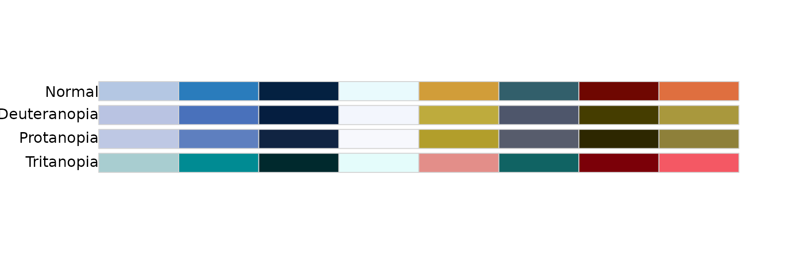
| name | n | tolerance | ncp | ndcp | min_dist | mean_dist | max_dist |
|---|---|---|---|---|---|---|---|
| normal | 8 | 15.32 | 28 | 28 | 15.32 | 44.03 | 81.71 |
| deuteranopia | 8 | 15.32 | 28 | 26 | 6.20 | 43.21 | 82.91 |
| protanopia | 8 | 15.32 | 28 | 26 | 11.93 | 41.82 | 78.92 |
| tritanopia | 8 | 15.32 | 28 | 25 | 11.68 | 44.40 | 77.83 |
tehran
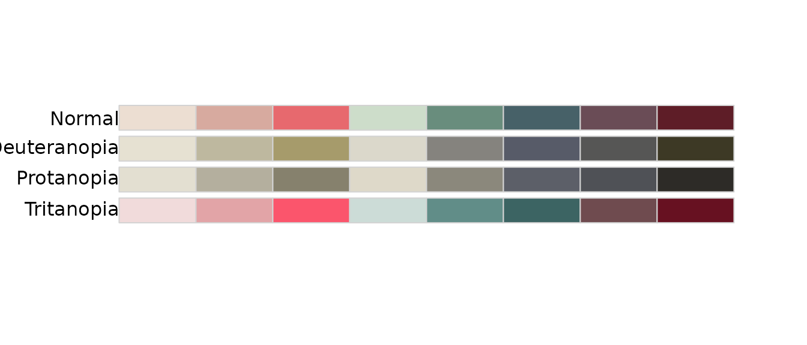
| name | n | tolerance | ncp | ndcp | min_dist | mean_dist | max_dist |
|---|---|---|---|---|---|---|---|
| normal | 8 | 14.66 | 28 | 28 | 14.66 | 37.53 | 71.85 |
| deuteranopia | 8 | 14.66 | 28 | 22 | 2.36 | 28.37 | 60.75 |
| protanopia | 8 | 14.66 | 28 | 21 | 1.59 | 27.80 | 69.35 |
| tritanopia | 8 | 14.66 | 28 | 28 | 15.56 | 38.95 | 71.06 |
hamburg

| name | n | tolerance | ncp | ndcp | min_dist | mean_dist | max_dist |
|---|---|---|---|---|---|---|---|
| normal | 8 | 10.07 | 28 | 28 | 10.07 | 45.91 | 81.62 |
| deuteranopia | 8 | 10.07 | 28 | 25 | 3.48 | 38.97 | 82.43 |
| protanopia | 8 | 10.07 | 28 | 26 | 5.30 | 38.37 | 78.94 |
| tritanopia | 8 | 10.07 | 28 | 27 | 8.17 | 38.28 | 74.83 |
isfahan
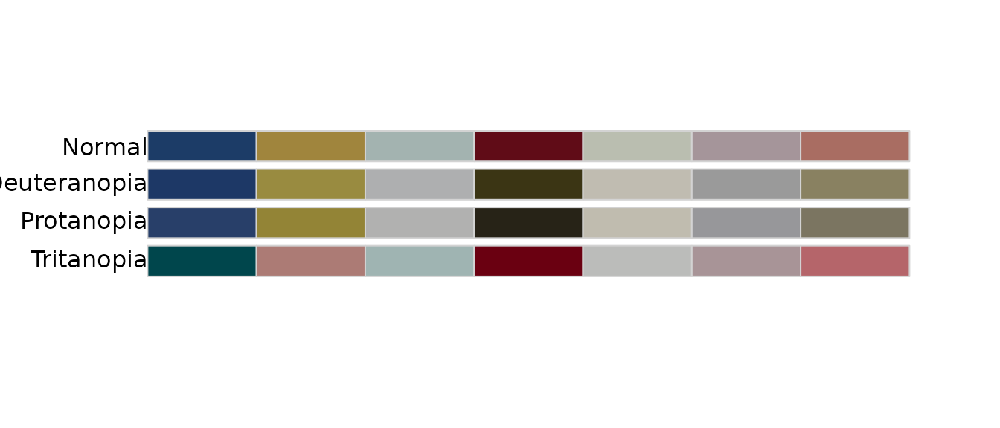
| name | n | tolerance | ncp | ndcp | min_dist | mean_dist | max_dist |
|---|---|---|---|---|---|---|---|
| normal | 7 | 7.38 | 21 | 21 | 7.38 | 35.31 | 63.61 |
| deuteranopia | 7 | 7.38 | 21 | 19 | 6.26 | 30.91 | 58.16 |
| protanopia | 7 | 7.38 | 21 | 20 | 6.40 | 31.16 | 59.16 |
| tritanopia | 7 | 7.38 | 21 | 21 | 8.42 | 34.23 | 60.90 |
munich
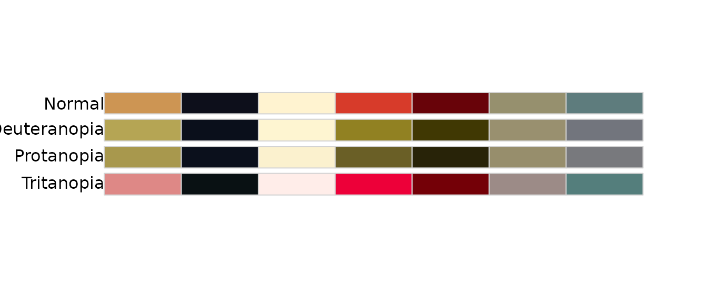
| name | n | tolerance | ncp | ndcp | min_dist | mean_dist | max_dist |
|---|---|---|---|---|---|---|---|
| normal | 7 | 16.62 | 21 | 21 | 16.62 | 40.90 | 93.83 |
| deuteranopia | 7 | 16.62 | 21 | 18 | 12.14 | 36.13 | 94.46 |
| protanopia | 7 | 16.62 | 21 | 20 | 9.80 | 36.08 | 92.87 |
| tritanopia | 7 | 16.62 | 21 | 21 | 17.31 | 40.04 | 91.23 |
leyli
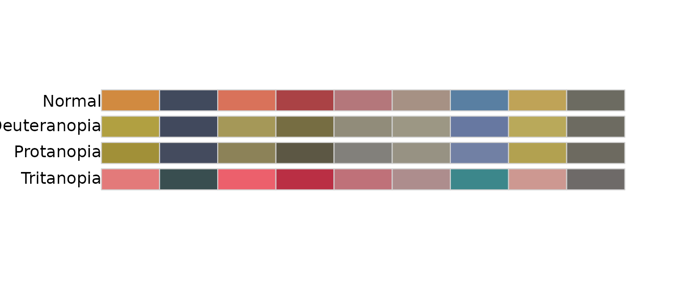
| name | n | tolerance | ncp | ndcp | min_dist | mean_dist | max_dist |
|---|---|---|---|---|---|---|---|
| normal | 9 | 13.12 | 36 | 36 | 13.12 | 28.14 | 49.33 |
| deuteranopia | 9 | 13.12 | 36 | 29 | 3.68 | 23.71 | 51.18 |
| protanopia | 9 | 13.12 | 36 | 29 | 5.58 | 22.47 | 48.22 |
| tritanopia | 9 | 13.12 | 36 | 29 | 5.71 | 26.88 | 55.62 |
tabriz
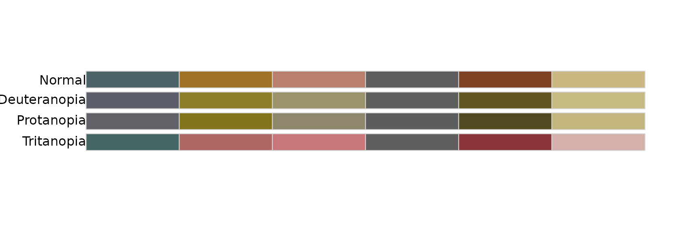
| name | n | tolerance | ncp | ndcp | min_dist | mean_dist | max_dist |
|---|---|---|---|---|---|---|---|
| normal | 6 | 11.76 | 15 | 15 | 11.76 | 27.51 | 42.58 |
| deuteranopia | 6 | 11.76 | 15 | 14 | 6.20 | 24.18 | 40.79 |
| protanopia | 6 | 11.76 | 15 | 14 | 3.92 | 23.26 | 41.99 |
| tritanopia | 6 | 11.76 | 15 | 14 | 7.73 | 27.65 | 43.73 |
abbas
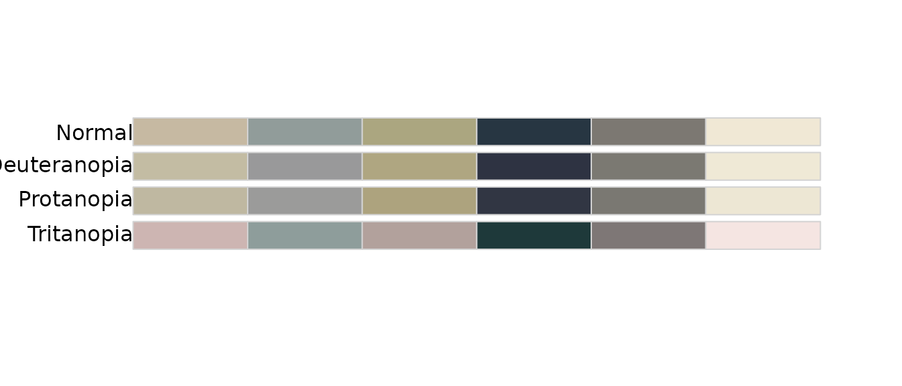
| name | n | tolerance | ncp | ndcp | min_dist | mean_dist | max_dist |
|---|---|---|---|---|---|---|---|
| normal | 6 | 9.23 | 15 | 15 | 9.23 | 27.88 | 66.85 |
| deuteranopia | 6 | 9.23 | 15 | 14 | 7.33 | 27.79 | 67.68 |
| protanopia | 6 | 9.23 | 15 | 14 | 7.55 | 26.84 | 65.37 |
| tritanopia | 6 | 9.23 | 15 | 14 | 6.79 | 28.26 | 67.36 |
reyhaneh
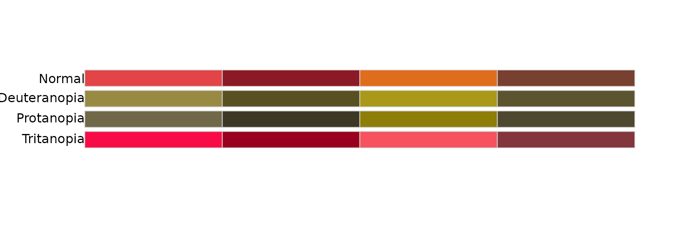
| name | n | tolerance | ncp | ndcp | min_dist | mean_dist | max_dist |
|---|---|---|---|---|---|---|---|
| normal | 4 | 10.92 | 6 | 6 | 10.92 | 22.66 | 33.38 |
| deuteranopia | 4 | 10.92 | 6 | 4 | 2.83 | 19.44 | 30.52 |
| protanopia | 4 | 10.92 | 6 | 5 | 5.63 | 17.50 | 30.00 |
| tritanopia | 4 | 10.92 | 6 | 4 | 6.85 | 18.31 | 26.09 |
berlin
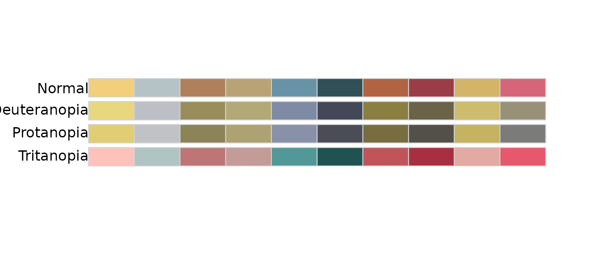
| name | n | tolerance | ncp | ndcp | min_dist | mean_dist | max_dist |
|---|---|---|---|---|---|---|---|
| normal | 10 | 6.76 | 45 | 45 | 6.76 | 32.01 | 57.08 |
| deuteranopia | 10 | 6.76 | 45 | 43 | 6.27 | 25.89 | 59.34 |
| protanopia | 10 | 6.76 | 45 | 45 | 6.81 | 26.25 | 53.89 |
| tritanopia | 10 | 6.76 | 45 | 44 | 6.48 | 31.09 | 60.65 |
pooran
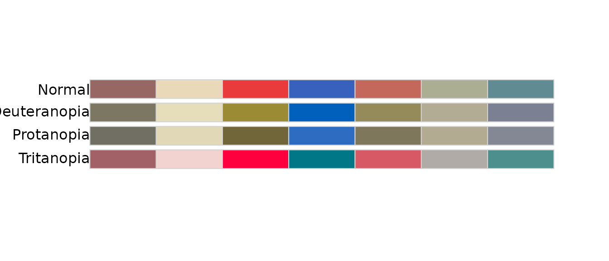
| name | n | tolerance | ncp | ndcp | min_dist | mean_dist | max_dist |
|---|---|---|---|---|---|---|---|
| normal | 7 | 9.51 | 21 | 21 | 9.51 | 33.26 | 54.31 |
| deuteranopia | 7 | 9.51 | 21 | 20 | 7.32 | 27.88 | 57.05 |
| protanopia | 7 | 9.51 | 21 | 19 | 7.44 | 26.16 | 51.68 |
| tritanopia | 7 | 9.51 | 21 | 21 | 9.93 | 34.65 | 66.67 |
Quantitative Comparison
With the scores produced by colorblindcheck, we can now
perform a proper quantitative analysis to check which palettes meet
certain thresholds and which might need adjustments.
Colorblind-Safety
Let’s compare peRsian with the popular
viridis palette, which has specifically been designed to
handle colorblindness well, to put its the color difference scores into
perspective.
# Helper function to conveniently calculate scores and assign a palette name
calculate_palette_scores <- function(colors, palette_name, ...) {
check_results <- colorblindcheck::palette_check(colors, ...)
cbind(
data.frame(palette = palette_name),
check_results
)
}First, we calculate the scores for viridis.
viridis_scores_df <- calculate_palette_scores(
viridisLite::viridis(8),
"viridis",
plot = TRUE
)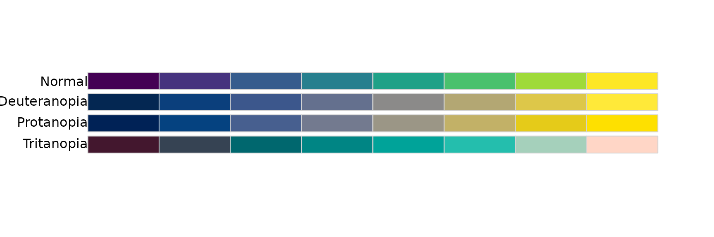
viridis_scores_df |>
knitr::kable(digits = 2)| palette | name | n | tolerance | ncp | ndcp | min_dist | mean_dist | max_dist |
|---|---|---|---|---|---|---|---|---|
| viridis | normal | 8 | 12.45 | 28 | 28 | 12.45 | 46.62 | 100.32 |
| viridis | deuteranopia | 8 | 12.45 | 28 | 24 | 8.43 | 39.97 | 90.16 |
| viridis | protanopia | 8 | 12.45 | 28 | 25 | 5.34 | 41.44 | 93.43 |
| viridis | tritanopia | 8 | 12.45 | 28 | 25 | 8.01 | 38.42 | 76.80 |
Let’s use the smallest difference in viridis as the
threshold to identify which palettes in peRsian we deem
“colorblind-safe”.
viridis_min_score <- min(viridis_scores_df$min_dist)
viridis_min_score
#> [1] 5.339964
# Create a dataframe with scores for all palettes in the package
persian_scores_df <- do.call(rbind, lapply(names(persian_palettes), function(palette_name) {
calculate_palette_scores(
persian_palette(palette_name),
palette_name,
tolerance = viridis_min_score
)
}))Now we can use this information to only mark palettes as colorblind-safe, where the smallest difference is above the threshold across ALL different forms of visual perception.
# Keep only palettes where all entries are above threshold
palettes_above_threshold <- persian_scores_df |>
group_by(palette) |>
# Number of comparisons == Number of comparisons above threshold
filter(all(ncp == ndcp))
colorblind_safe_palettes <- palettes_above_threshold$palette |>
unique()
colorblind_safe_palettes
#> [1] "fery" "isfahan" "munich" "abbas" "berlin" "pooran" "hooshang"Let’s also collect the names of all palettes that didn’t make it (use these with caution!).
Ordering Palettes
Finally, we can order all palettes by their minimum color difference (under full vision) to get a better overview of which ones are most distinguishable and which ones may need more work.
persian_scores_df |>
filter(name == "normal") |>
arrange(desc(min_dist))
#> palette name n tolerance ncp ndcp min_dist mean_dist max_dist
#> 1 hooshang normal 4 5.339964 6 6 17.240440 33.19147 48.85390
#> 2 munich normal 7 5.339964 21 21 16.622315 40.89513 93.82743
#> 3 fery normal 8 5.339964 28 28 15.316886 44.03096 81.71196
#> 4 tehran normal 8 5.339964 28 28 14.660184 37.52704 71.85012
#> 5 leyli normal 9 5.339964 36 36 13.121273 28.13639 49.32902
#> 6 tabriz normal 6 5.339964 15 15 11.756631 27.51236 42.57928
#> 7 reyhaneh normal 4 5.339964 6 6 10.923154 22.65976 33.38325
#> 8 floral normal 5 5.339964 10 10 10.698235 22.98735 31.90445
#> 9 hamburg normal 8 5.339964 28 28 10.067141 45.90776 81.61558
#> 10 pooran normal 7 5.339964 21 21 9.510745 33.25645 54.31265
#> 11 abbas normal 6 5.339964 15 15 9.226046 27.88051 66.84959
#> 12 isfahan normal 7 5.339964 21 21 7.383788 35.30816 63.61494
#> 13 berlin normal 10 5.339964 45 45 6.755299 32.00604 57.07781Palettes which may need adjustments:
persian_scores_df |>
filter(name == "normal") |>
arrange(min_dist)
#> palette name n tolerance ncp ndcp min_dist mean_dist max_dist
#> 1 berlin normal 10 5.339964 45 45 6.755299 32.00604 57.07781
#> 2 isfahan normal 7 5.339964 21 21 7.383788 35.30816 63.61494
#> 3 abbas normal 6 5.339964 15 15 9.226046 27.88051 66.84959
#> 4 pooran normal 7 5.339964 21 21 9.510745 33.25645 54.31265
#> 5 hamburg normal 8 5.339964 28 28 10.067141 45.90776 81.61558
#> 6 floral normal 5 5.339964 10 10 10.698235 22.98735 31.90445
#> 7 reyhaneh normal 4 5.339964 6 6 10.923154 22.65976 33.38325
#> 8 tabriz normal 6 5.339964 15 15 11.756631 27.51236 42.57928
#> 9 leyli normal 9 5.339964 36 36 13.121273 28.13639 49.32902
#> 10 tehran normal 8 5.339964 28 28 14.660184 37.52704 71.85012
#> 11 fery normal 8 5.339964 28 28 15.316886 44.03096 81.71196
#> 12 munich normal 7 5.339964 21 21 16.622315 40.89513 93.82743
#> 13 hooshang normal 4 5.339964 6 6 17.240440 33.19147 48.85390